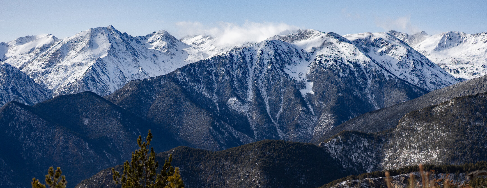
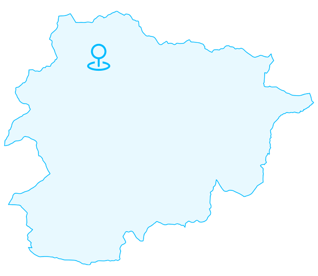
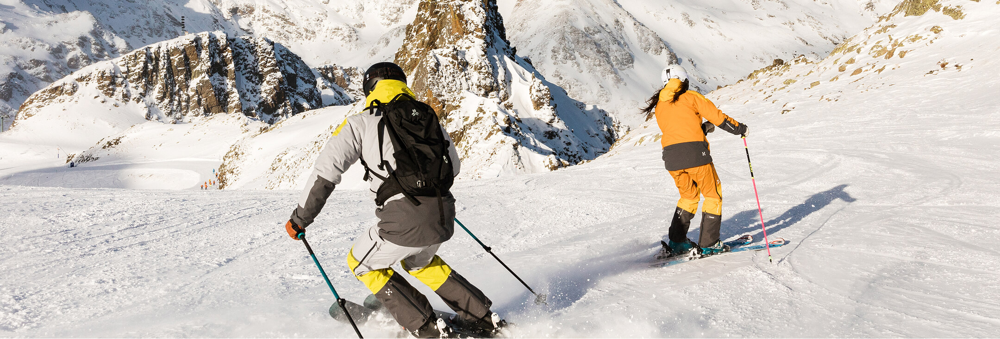
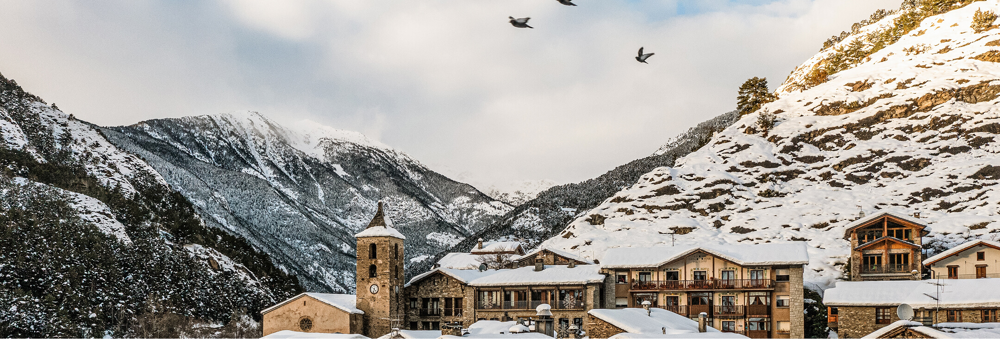

En colaboración con Visit Andorra
Andorra acoge el congreso mundial que debate cómo la digitalización y la IA están cambiando el turismo de montaña
El 13.º Congreso Mundial de Turismo de Nieve, Montaña y Bienestar reúne en Andorra, del 25 al 27 de marzo, a profesionales de más de 20 países para analizar el impacto de la digitalización en los destinos de montaña
Andorra vuelve a ser el epicentro mundial del turismo de montaña. El Gobierno andorrano y los siete Comuns de Andorra, junto a ONU Turismo, organizan la decimotercera edición de Mountainlikers, un congreso bienal que desde 1998 reúne a instituciones, empresas y expertos internacionales para reflexionar sobre el futuro de los destinos de nieve y montaña.
Este año el congreso se ha reinventado con la ayuda de una idea transversal que, tanto por el contenido como por los perfiles invitados, busca atraer a un público de todas las edades y llegar también a las nuevas generaciones. El eje temático es tan actual como inevitable: "El destino bajo la influencia digital".
¿Cómo aprovechar el potencial digital sin perder la esencia del territorio?
Esa es la pregunta que se plantea en El Congreso Mundial de Turismo de Nieve, Montaña y Bienestar en Andorra

La digitalización, la inteligencia artificial y las nuevas tecnologías están transformando la forma en que los viajeros descubren, eligen y viven los destinos. El congreso quiere explorar cómo aprovechar ese potencial sin perder la autenticidad de los territorios de montaña ni el factor humano que los define.
En el reverso de la influencia digital, el Congreso Mundial de Turismo de Nieve, Montaña y Bienestar también abordará la hiperconectividad, y cómo el valor de la desconexión consciente y el bienestar emocional son ya tendencias en alza que los destinos de montaña pueden liderar de forma natural.
Lugar
Centro de Congresos de Andorra la Vella, Andorra
Parroquia anfitriona
Ordino
Fechas
25–27 de marzo de 2026
Países
20
Edición
13.ª (desde 1998)
Pero la digitalización no es solo uno de los aspectos destacados que se debatirán en la cita. El cambio climático estará muy presente, porque obliga a los destinos de montaña a reinventarse y se analizará cómo superar el reto de la estacionalidad mediante experiencias auténticas que pongan en valor el patrimonio natural y cultural durante todo el año, equilibrando innovación turística y bienestar de las comunidades locales. Una de las sesiones presentará, además, las primeras conclusiones del informe Cambio climático y el futuro de los destinos de turismo de nieve y de montaña, encargado por la Comisión Regional de ONU Turismo para Europa.
Ponentes destacados
Dr. Alex Connock
Senior Fellow de la Saïd Business School (Universidad de Oxford). Especialista en inteligencia artificial y medios digitales. Ha codirigido el diploma de posgrado en IA para los negocios de Oxford
Aradhana Khowala
CEO de Aptamind Partners. Una de las voces más influyentes del turismo de bienestar a nivel mundial. Ha asesorado a presidentes y primeros ministros sobre turismo regenerativo y sostenibilidad
Jessica Fischer
Fundadora de GuestOS, plataforma de conserjería impulsada por IA para destinos turísticos y operadores hoteleros. Experta en comunicación resiliente en entornos complejos
Bernat Casaña
CEO de Becama Consulting y cofundador de ENID, una de las academias de IA más importantes del mundo hispanohablante. Autor del >bestseller IA: La Última Revolución Humana
Jordi Urbea
CEO de Ogilvy Spain. Pionero de la publicidad digital en España y referente en transformación digital de marcas y empresas
El Congreso conecta a profesionales y líderes internacionales del sector turístico, lo que permite generar intercambio de conocimientos y proyectos globales que marcan el futuro del turismo.
La cita ayuda a descubrir soluciones prácticas e inspiradoras para los destinos naturales y consolida así su papel como punto de referencia internacional para el turismo de montaña.

Más de 300 profesionales de 20 países debatirán en Andorra el futuro del turismo de montaña en la era de la IA
En esta nueva etapa del evento se ha repensado también su estructura, concentrando todas las ponencias durante la mañana y reservando las tardes a talleres experienciales. Así, la agenda combina conferencias de alto nivel con gastronomía de montaña, actividades de bienestar en entornos naturales y visitas culturales a Ordino. Un formato que convierte a Andorra en laboratorio vivo de innovación turística, donde tecnología, naturaleza y experiencia conviven.
Más información e inscripciones: mountainlikers.com
